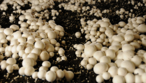

The Fungi
The Importance of Fungi
- major decomposers on Earth
- responsible for much of the cycling of nutrients through the biosphere
- engage in important symbiotic relationships with plants
- used to make bread, soy sauce, and blue cheese
- rot wood and damage buildings and other structures
- display an amazing diversity of characteristics and life cycles\
The most economically valuable use of fungi is in the production of
alcoholic beverages.
Example: Saccharomyces cerevisiae
Certain fungi are also used in genetic engineering research and
applications.
Fungi are essential components of the ecosystem because of the following:
- Major decomposers on Earth
- Responsible for much of the cycling of nutrients through the biosphere
- Engage in important symbiotic relationships with plants
- Used to make bread, soy sauce, and blue cheese
- Rot wood and damage buildings and other structures
- Display an amazing diversity of characteristics and life cycles
The most economically valuable use of fungi is in the production of alcoholic beverages.
Saccharomyces cerevisiae, the only unicellular fungus, is used in the brewing industry for fermenting beer.
<YES> <NO>
Classification and Phylogeny
Fungi are not plants. In fact, they have almost nothing in common with plants except that they are sessile (stationary) multicellular eukaryotes and many grow in the ground.
- fungi are not photosynthetic
- they do not produce their own food
- fungi cells are unlike plant cells
- More than 100, 000 species of fungi have been described.
These are classified into five major phyla. The five major phyla
range in size from microscopic single-celled organisms to the
largest organisms on Earth. They exhibit a diversity of forms and
life cycles - There are five major phyla within the Fungi kingdom. The Ascomycota and Basidiom
- They are the only fungi with swimming spores.
- Most are saprophytes
- They can be single-celled or multicellular
- They include some familiar bread and fruit molds.
- Most are soil fungi.
- Many are used commercially.
- Many are parasites of insects.
- All form symbiotic relationships with plant rods.
- Many, such as yeast, are useful to humans.
- Some cause serious plant diseases.
- They include mushrooms, puffballs, and bracket fungi.
- Most are decomposers.
- Some form symbiotic relationships with plants.
Mycelium- a branched mass of hyphae
Hypha- a thin filament that makes up the body of a fungus
Chitin- a complex chemical found in the cell walls of fungi and in the external coverings of insects and crustaceans such as lobsters and crabs
image (a) The reproductive structure of a fungus is often the only part visible above ground. The mycelium forms the body of the fungus below ground.
image (b) Hyphae grow at their tips, and the nuclei multiply by mitosis as the hyphae grow.
image (a) The “fuzz” we associate with moldy food is the hyphae of the fungus.
image (b) Even light contact with a mature puffball will cause the release of millions of microscopic spores.
One major difference between plants and fungi is that all fungi are heterotrophic— they get energy from other living or dead organisms.
Rather than taking food inside their bodies, fungi grow next to—or within—their food source and release digestive enzymes into their surroundings.
Life Cycles

The life cycles of many fungi are quite complicated. Some include stages of sexual as well as asexual reproduction.
A Diploid is a cell or organism that has paired chromosomes, one from each parent.
Haploid is the quality of a cell or organism having a single set of chromosomes.
Dikaryotic is characterized by the presence of two nuclei in each cell.
The life cycle of a Fungi
Each spore contains a haploid nucleus. These spores germinate and produce hyphae with single nuclei separated by septa.
The cell then grows into a large new mycelium made of cells with two haploid nuclei. When the mycelium becomes large and mature, it may produce a mushroom cap.
The zygote then undergoes meiosis, producing four haploid spores. The spores are released into the environment. When conditions are right, these spores germinate and the cycle continues.
- A single large mushroom can release 100 million spores in an hour!
- Yeast are single-celled haploid fungi. They reproduce by budding. In budding, the individual yeast cell acts like a tiny hypha.
- As the cells continue to grow and bud, they often stay attached to each other, forming simple hypha-like arrangements.

Symbiotic Relationships in Ecosystems
- A cross-sectional diagram of a lichen showing the
mixing of fungi (brown) and cyanobacteria or green
algae (green).
The fungi’s mycelium envelops and protects the cyanobacteria or algae and supplies them with water and mineral nutrients. In return, these photosynthetic organisms supply the fungi with food.
The most remarkable thing about this relationship is that more than 80 % of all plant species are involved! In this relationship, called mycorrhiza (plural: mycorrhizae), hyphae grow around or within the root cells of the plant.
Decomposers and Disease
Fungal diseases also affect many plants. Some of these diseases produce toxic chemicals as well as damage the plants. One species of fungus that infects wheat and rye produces a potent toxin similar to the one found in the drug LSD. The toxin can cause hallucinations, convulsions, and paralysis. Another fungus that feeds on peanuts produces a chemical with the potential to cause cancer.